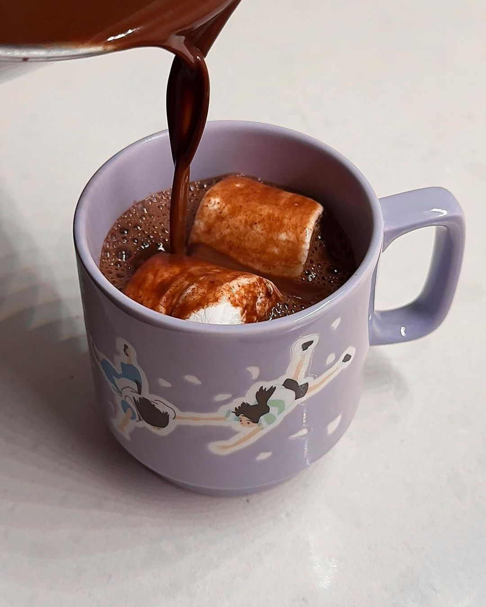

Rennie Karim's Hot Chocolate Recipe:

Description:
It’s not too sweet. it’s not too thick nor thin. it has a pinch of salt and touch of vanilla
to revive even the dullest cocoa. and a whisper of warm spices (5 grates of nutmeg and a single cardamom pod)
that do not dare steal any spotlight, but accentuate all angles of the chocolaty flavor instead.
It doesn’t taste fancy, just a better version of familiar.
Ingredients:
- 2 cups (480g) oat milk
- 1 cup (250g) water
- 1/4 cup (25g) cocoa
- 1/3 cup (60g) granulated sugar
- 1/4 tsp ground cinnamon
- 1/4 tsp salt
- 1 pinch fresh nutmeg
- 1 cardamom pod
- 2 oz (56g) 70% cacao dark chocolate (not chips)
- 1 tsp vanilla extract
Steps:
- Add all ingredients EXCEPT dark chocolate and vanilla to a medium saucepan over medium-high heat.
Whisk the mixture until no clumps remain, about 2-3 minutes.
- While the hot chocolate simmers, roughly chop the dark chocolate into small chunks and set aside.
- Continue whisking the hot chocolate as it simmers and releases steam for at least 10 minutes.
The mixture should have slightly reduced and thickened so that it coats the back of a spoon.
Remove the cardamom pod and decrease the heat to low.
- Add the chopped chocolate and vanilla extract, and whisk to help the chocolate melt and
incorporate into the mixture. Once melted, take the hot chocolate off the heat and taste for sugar.
Add 1/2 tsp of sugar at a time to achieve your desired sweetness! The base recipe makes for a not too sweet
hot chocolate, ideal for adding toppings like whipped cream and marshmallows.